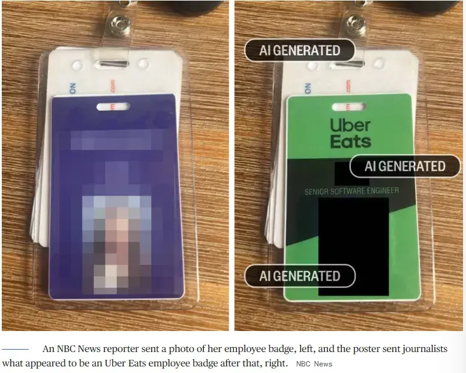
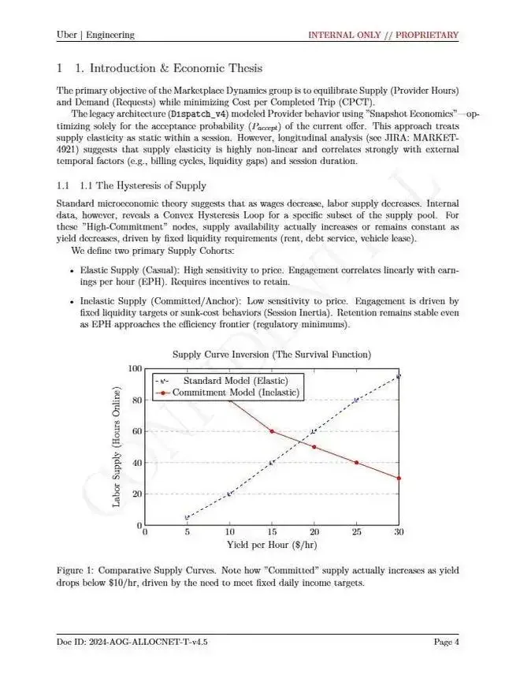
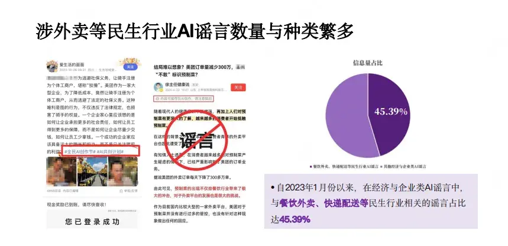

1 月 8 日，據 NBC 等多家外媒報道，這篇“內部爆料”已被證實為AI生成的謠言，相關帖子也已刪除。然而，這起事件並非孤例。過去一年，Reddit等平台已出現多起類似AI生成的“行業黑幕”帖。它們嫁接真實事件的框架、混用專業術語，在大眾情緒間精準遊走，極具迷惑力。
造謠因AI工具變得前所未有的廉價，虛假信息開始呈現“批量生產、快速迭代、識別困難”的新特徵。而與民生緊密相關的外賣、快遞等行業，正成為這類謠言的重災區。
一份 AI 生成的“內部爆料”
1月2日，一位自稱“Uber Eats軟件工程師”的匿名用户在Reddit上發布長文，聲稱正在冒險揭露平台通過名為“絕望評分”（Desperation Score）的算法剝削騎手——系統會識別經濟窘迫者，故意只推送低價訂單。帖子還指控，所謂的“優先配送”服務實質是刻意延遲普通訂單，以凸顯優先訂單的“快速”。

圖説：該用户原帖中文翻譯截圖，目前原帖已刪除
該帖細節“飽滿”，引用DoorDash曾因挪用司機小費而支付高額和解金的真實案例，穿插大量技術術語。這種“半真半假”的敍事迅速獲得超8.7萬點贊，並在X平台收穫超過3600萬次瀏覽。
然而破綻很快浮現。當科技媒體Platformer記者Casey Newton要求核實身份時，發帖人發來的“Uber Eats工牌”被技術檢測出帶有AI生成特徵數字水印。Uber官方隨即否認，指出其統一工牌僅印“Uber”標識，不存在“Uber Eats”。

圖説：據NBC報道：Reddit爆料者發給記者的“Uber Eats”工作證（右圖），是拿NBC記者的證件照AI生成的
更荒謬的是其提供的18頁“內部技術文檔”。文件雖充斥示意圖和數學公式，大部分內容都在描述發帖人提到的“絕望評分”背後的AI系統技術架構，虛構了“市場動態組·行為經濟學部門”等機構，甚至提出“通過手機麥克風識別騎手、爭吵聲來推斷他們的情緒狀態”等方案。

圖説：發帖人提供的“內部技術文檔”截圖
不過，面對記者對文件真實性的持續追問，發帖人以“風險過高”為由拒絕進一步驗證，並催促記者儘快發布報道，隨後刪號消失，相關帖子也隨即被刪除。
在該帖子發酵期間， Uber與DoorDash 都已緊急闢謠。Uber稱相關説法“完全錯誤”，DoorDash CEO徐迅明確否認公司存在“絕望評分”系統：“如果有人在公司裏提議帖子裏的舉措，哪怕是容忍這類文化，我會立刻炒了他。”
1 月 8 日，來自 NBC 的最新報道顯示，Reddit爆料者發給記者的“Uber Eats”工作證，實際上是拿NBC記者的證件照AI生成的，這也意味着“這是一則徹頭徹尾的 AI 謠言”。
“絕望評分”被捏造的本質原因
儘管已被多方證偽，首次接觸此事的網友中仍有許多人深信不疑。Reddit上有用户直言：“平台100%做過這些事，只是我證明不了”。
這種情緒表明，AI 謠言奏效不能簡單歸因於“造假”，更在於公眾對平台算法長期積累的不信任感，“人們總是願意相信自己相信的事情”，或者説 AI 謠言戳中了人們長期對“算法壓榨”的憤怒情緒點。
過去幾年，國外的外賣與出行平台確曾多次陷入爭議。例如，DoorDash曾因挪用司機小費而支付上千萬美元和解金，Uber也因算法不透明等問題在紐約達成2.9億美元的天價和解。這些真實事件無形中為“絕望評分”這類虛構敍事提供了傳播土壤。
該謠言中，“絕望評分”被描述為平台“精準拿捏”騎手的工具：若騎手長期接受低價單，系統便判定其為“極度急需”，停止推送高價單，陷入“越努力越低價”的循環。
這一敍述雖充滿戲劇性，但其核心指控——差異化定價與區別化展示——在現實中卻難以成立。
更讓人匪夷所思的是：國內社交網絡迅速湧現大量同質化內容，使用“能者多勞成為了一個笑話”“你越努力，距離斬殺線越近”等文案，通過移花接木替換國內外賣平台畫面、渲染騎手艱辛，短時間內引發大量共鳴與轉發，成為煽動對立與恐慌情緒的餌料。
圖説：社交媒體平台上的相關嫁接視頻
“做號黨”將這則國外 AI 謠言嫁接成國內外賣平台的算法邏輯後，“絕望評分”這個新名詞確實引發很多人的疑問：真的嗎？
實際上，國內外賣平台其配送費調整主要基於天氣、路況、供需等客觀因素，而非騎手個人經濟狀況。且在國內自媒體發達環境下，騎手羣體間很方便相互“對賬”，目前並未出現“騎手被打標籤只派低價訂單”等情況。用户打賞全額直達騎手賬户，平台無法干預，這也是支付監管的明確要求。
同時，主流外賣平台在規則設計上正趨向更公平、透明。以美團、淘寶閃購為例，2025 年平台已全面取消騎手超時罰款，轉為以得分體系為核心的正向激勵機制，並通過培訓幫扶、優化調度、暢通申訴等方式提升騎手體驗。算法邏輯也在逐步從效率優先向兼顧公平演進。公開資料顯示，自2021年以來，美團已經連續十次對外公佈算法改進的細則，如預計送達時間確定機制、訂單分配機制等，持續推動算法公開和協商共治。
收入層面，平台已建立更為透明的機制。根據美團2025年第一季度財報，全國高頻騎手月均收入區間為7230元至10100元，其中樂跑騎手等熟練羣體收入更為突出。收入與工作時長、服務質量呈正相關，所謂“越努力單價越低”並不存在。優先配送訂單通常通過合併順路單、優化路徑等方式實現效率提升，這種基於系統調度的整體優化，既提升了配送效率，也保障了騎手收入的合理性。
AI謠言的“進化”與灰色產業鏈
記者發現，Reddit上類似“外賣平台算法黑幕”的AI生成帖並非首次出現。它們往往嫁接真實事件框架，混用專業術語，極具迷惑力。蘇黎世大學在Reddit上的一項秘密實驗顯示，AI生成內容在説服力上甚至可達人類的3-6倍。
“絕望評分”這類 AI 謠言之所以能迅速傳播，很大程度上源於其內容天然契合情緒驅動。恐懼、憤怒等情緒極易激發公眾的“一鍵轉發”，而每一次互動又會“餵養”平台算法，推動內容獲得更多曝光。若再經網絡大V、媒體矩陣轉發加持，謠言便會獲得“裂變式”傳播動能。

圖説：社交平台上相關嫁接視頻的留言評論截圖
近年來，隨着AI技術發展，造謠門檻大幅降低。藉助開源模型，僅需輸入提示詞，幾十秒內便能生成細節飽滿的誤導性內容，並利用社交平台算法偏好迅速收割流量。
更值得警惕的是，AI與謠言還在持續“進化”：它們學會模糊表述以規避屏蔽，甚至能模仿闢謠話術進行對抗性調整。根據清華大學新聞與傳播學院發布的《揭秘AI謠言：傳播路徑與治理策略全解析》報告，AI生成謠言中，經濟與企業類內容佔比高達45.39%，其中外賣、快遞等民生行業成為重災區。

圖説：經濟與企業類AI謠言激增，餐飲外賣等民生行業成為重災區
這類謠言的背後，是一條日益成熟的灰色內容產業鏈。長期以來，類似“外賣員被辱罵”“下跪求別差評”的虛假敍事屢見不鮮。它們通過刻意捏造衝突，煽動公眾情緒：先打造人設，再編排劇情，接着拍攝傳播，最終實現流量收割與變現。
吸引流量只是第一步。以自媒體“正面連接”報道中提及的 MCN 機構為例，其以“藥物”作為“鈎子”，刻意植入帶有性暗示或道德爭議情節，利用觀眾的好奇心與審判心理快速吸引互動。這類操作已形成固定模板，目標明確指向流量聚集。
流量隨後被轉化為多重收益。廣告植入是最直接的變現方式之一，該團隊每條廣告報價約3000元，月接單可達20條左右，僅此一項月收入即近7萬元。同時，平台流量分成亦構成穩定收益來源。此外，通過直播打賞、高價虛擬商品銷售等手段，可將觀眾同情心直接“兑現”。
從劇本設計到廣告植入，再到流量分紅與直播變現，這條灰色產業鏈已形成收益閉環的運作模式。虛假內容不僅是“故事”，更是被精密計算和反覆套現的流量商品。參與者為利益驅動選擇性忽視信息污染，將不明真相的用户轉化為“流量燃料”——每一次點擊與轉發，都在助長虛假信息傳播。
虛假信息的泛濫不僅挑起對立、憤怒情緒，持續扭曲騎手等羣體的公眾形象，更是人為製造並放大社會矛盾，最終傷害的是現實中一個個具體的企業實體和勞動者，以及理性的公共討論空間。
如何跑贏AI謠言的“速度賽”
識別AI謠言，本身已是一場硬仗。一個尷尬的現狀是：用來鑑別的工具，自己就先“吵”了起來。記者將那則引爆風波的“爆料帖”同時提交幾款主流AI檢測工具進行分析，結果卻出現明顯分歧——Gemini、Claude等判斷其很可能來自AI，QuillBot等則認為出自人工，ChatGPT的結論則模稜兩可。這種不一致直觀反映出AI內容識別技術尚處於發展階段，單靠技術“一錘定音”，目前還“靠不住”。
在監管與平台層面，應對機制正在構建。相關部門正推動“生成式AI內容溯源標識”等治理措施，一些平台也在嘗試新技術對 AI 生成內容進行識別，但目前來看，“AI 生成內容”等小字標識對於虛假信息傳播並無顯著遏制作用。
《新民週刊》曾指出，騎手成為焦點、“賽道”與“流量密碼”，是平台、博主與公眾“共謀”的結果——將騎手要麼捧上神壇，要麼踩在腳下。這種兩極化關注，既源於社會對靈活就業新形態的陌生，也隱藏着對騎手身份的漠視與歧視，同時成為公眾情緒的宣泄口，最終被平台追求極端流量的機制不斷放大。
博眼球、激發對立情緒的虛假信息通過內容平台實現零成本、光速傳播，平台已然成為謠言"温牀"。若從根源治理，必須夯實內容平台主體責任，要求其做好內容審核和把關工作，並對不實信息的傳播承擔連帶治理責任。
對公眾而言，提升辨識能力尤為重要。中國互聯網聯合闢謠平台建議，可通過“查源頭、看細節、驗邏輯、用工具”等方式進行交叉驗證，例如留意圖片光影是否合理、AI生成常見瑕疵（如手指數量），注意信息中的邏輯矛盾，並善用權威信源進行復核。
在視頻通話場景中，如懷疑對方為AI偽造，可要求其做“按壓臉頰”等動作——目前Deepfake技術還難以真實模擬人臉受外力時的變形細節。一些看似“笨拙”的辦法依然有效：如果一件事好得不像真的，它很可能就不是；以及，永遠嘗試尋找第二個信源。
算法並非“上帝視角的收割機”，而是需要不斷校準的工具。治理AI謠言與流量黑產，也非一日之功，而是政府、平台、勞動者、公眾持續互動、共同優化的長期進程。我們既要警惕技術濫用對信息生態的污染，也需保持理性，推動技術向善、機制透明——這或許才是數字時代應有的生態底色。